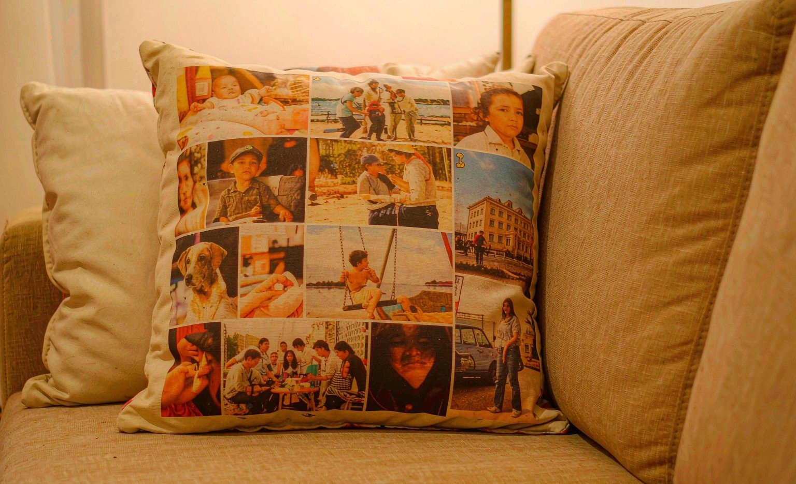

Short answer: the custom photo pillow I sent my mom for her birthday became her favorite couch accessory within a week. The unboxing was genuinely exciting, the fabric felt premium, and the photo came out crisp even though I sent a ten-year-old picture. If you only order one personalized gift this year, a photo pillow is the safest bet for about twenty-five dollars.

Why a Photo Pillow for My Mom
My mom redecorated her living room last year in warm neutral tones, so a printed mug or a loud blanket would have clashed. A custom photo pillow was the perfect middle ground: personal but decorative. I picked a photo from a family reunion that she took herself, which felt fitting, and ordered an 18 by 18 inch single-sided print from Personalization Mall for $24.99 plus shipping.
The Unboxing Experience
It arrived in a padded mailer, and the pillow came vacuum flattened, which seems to be standard now. After two hours of fluffing back into shape:
- The cover fabric was a soft woven polyester that felt closer to a decor pillow than a budget print job
- The hidden zipper was well sewn, no loose threads
- The insert was included and filled the cover fully, no sagging corners
- The print was noticeably sharper than the source photo I sent, which surprised me
I had warned myself not to expect much from a ten-year-old photo taken on an early smartphone. The printer sharpened it cleanly, and at couch distance it reads perfectly.
What I Compared Before Ordering
| Feature | What I Chose | Why It Mattered |
|---|---|---|
| Size | 18 x 18 inches | Standard couch pillow size, fits her existing arrangement |
| Insert | Included synthetic fill | No separate purchase, arrived ready to gift |
| Fabric | Woven polyester blend | Softer hand feel than basic canvas |
| Single-sided | Half the cost of double-sided, and the back faces the couch anyway | |
| Price | $24.99 plus shipping | Fits a casual birthday budget with room to spare |
My Mom's Reaction After One Week
She texted me a photo of it on the couch between two of her existing pillows, angled so the photo faces the room. By her account, it gets comments from every visitor. It has been grabbed, flipped, and sat on by my toddler nephew during a visit, and the print shows no wear from any of it.
Durability So Far
Two months in, the zipper still runs smoothly and the cover has not pilled. The cover unzips for washing, which is worth confirming before you order, since some sellers sew the cover shut. If you are choosing a pillow for a pet-heavy or kid-heavy household, check our guide to storing and protecting personalized gifts for keeping prints in good shape.
Would I Order Another Photo Pillow?
Already have. The price to impact ratio is hard to beat, the quality risk is low if you send a decent photo, and it suits almost anyone with a couch. For a bigger surface with more photos, a custom blanket is the upgrade path, but as a single thoughtful gift, the pillow is the easy winner.
Frequently Asked Questions
What size photo pillow is best?
18 by 18 inches is the most versatile choice for couches and beds. Go larger, like 20 inches, only if the pillow will sit on a big sectional or as a floor cushion.
Do photo pillows come with inserts?
Many sellers include an insert, but not all, so read the listing carefully. An included insert usually costs only a couple of dollars more than a cover-only order.
How clear will my photo look on a pillow?
Sharp, well-lit photos print cleanly at standard pillow sizes. Most printers auto-enhance mildly soft images, but very low resolution photos will show softness up close.
How do I clean a custom photo pillow?
Unzip the cover and hand wash or machine wash cold on gentle, then air dry. Never put a printed pillow cover in a hot dryer, since heat fades the design.